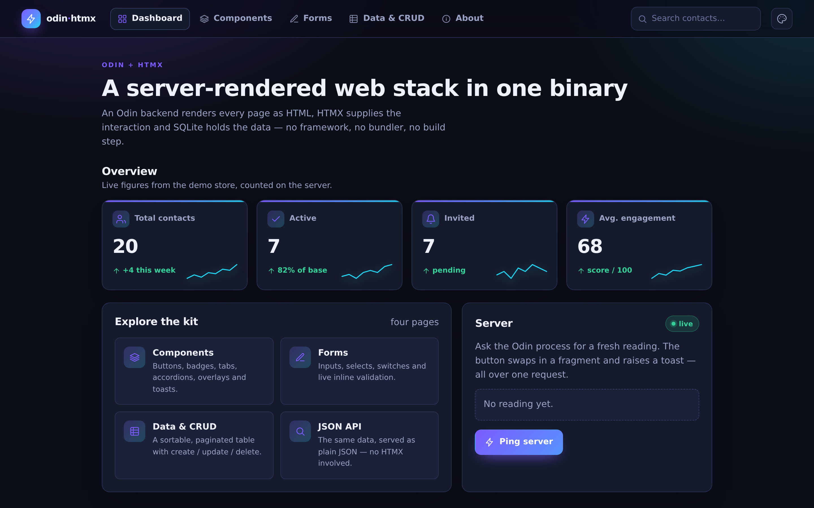
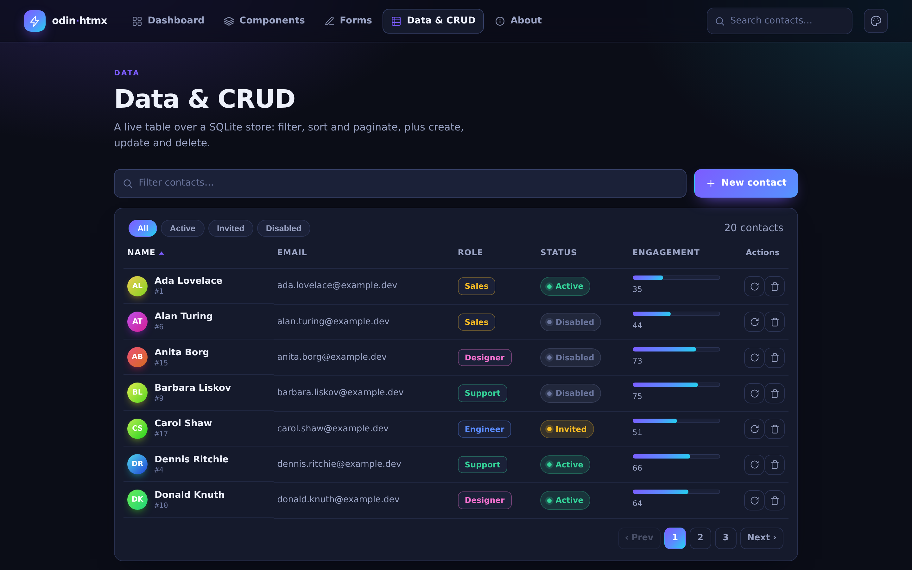
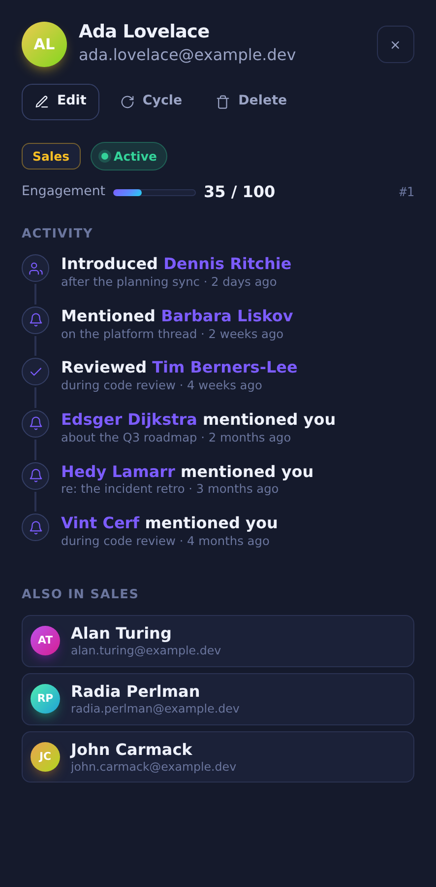
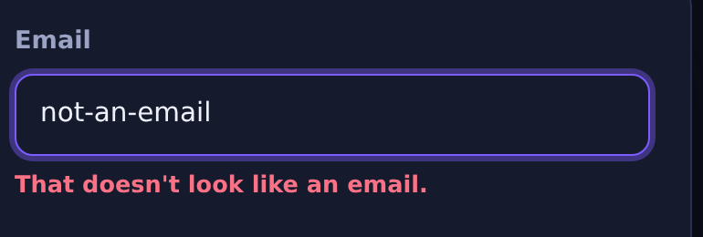
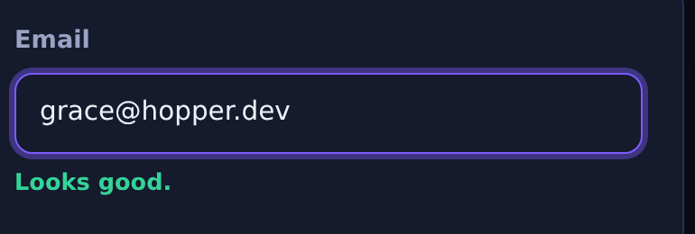
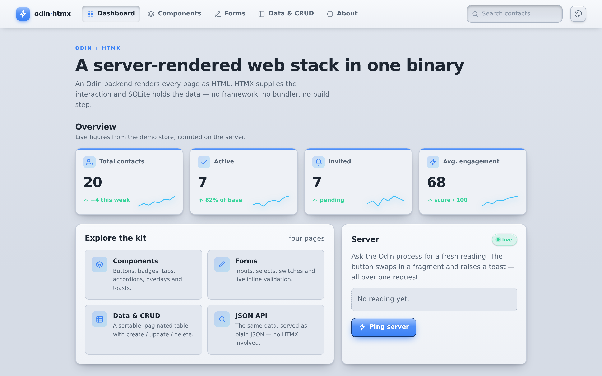
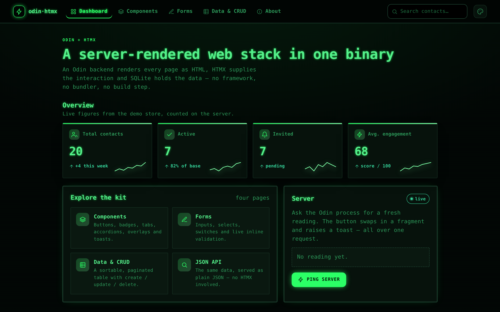
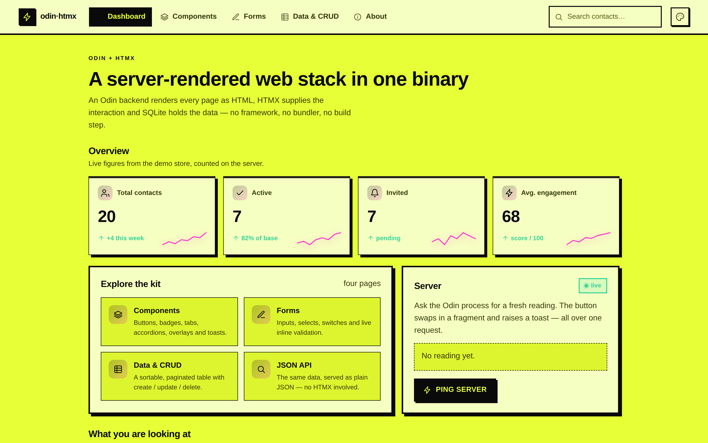
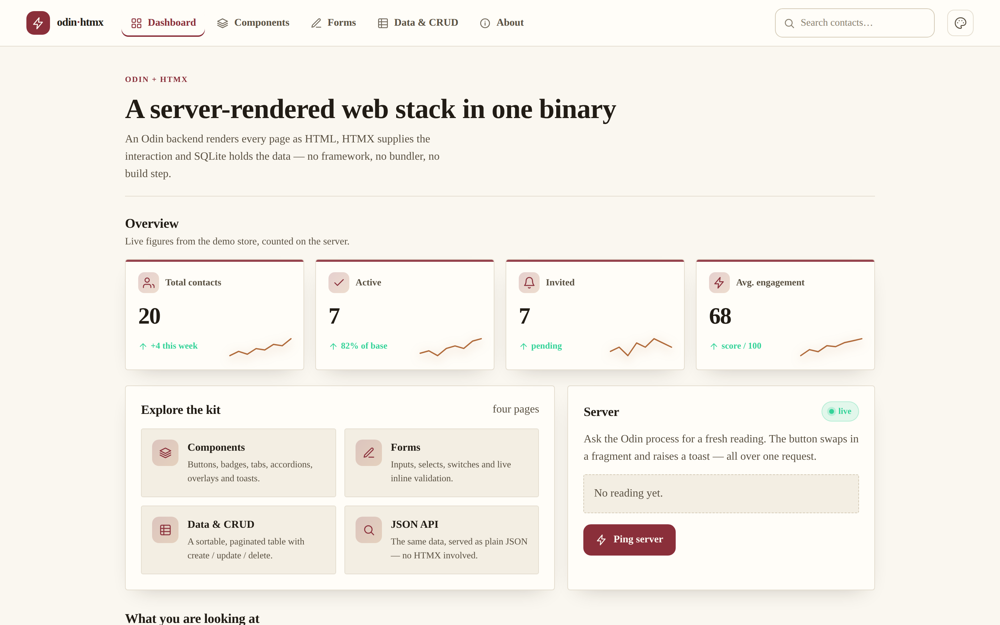
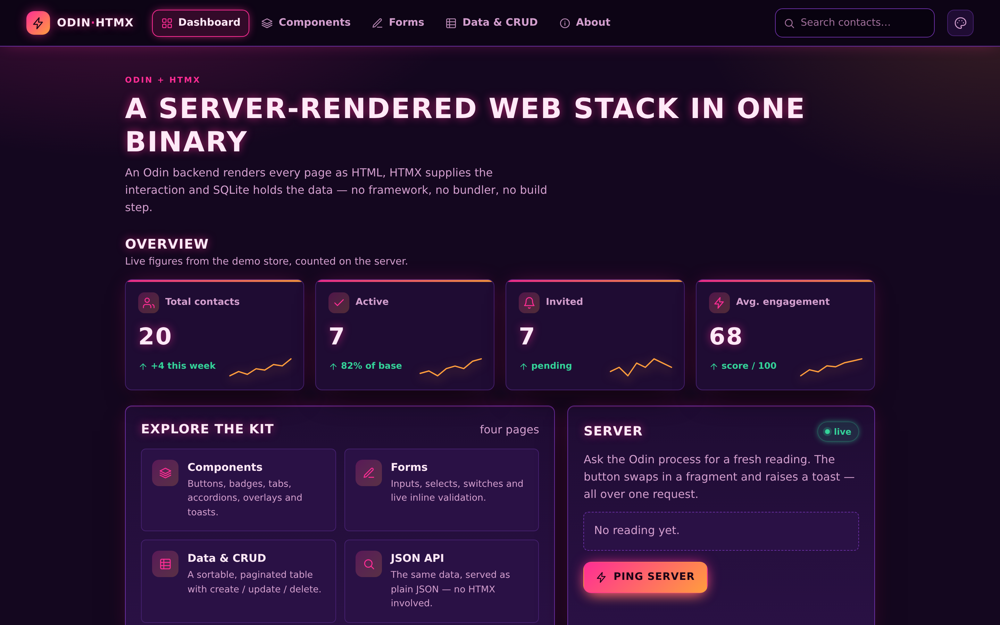

$
bin/demo.bin3.2 MB
the entire website — one file

rendered by Odin · swapped by HTMX


one request → one HTML fragment
validated as you type — on the server








Modern
Skeuo
Terminal
Brutalist
Editorial
Arcade
Same HTML.
6 styles × 23 schemes
0
lines of Odin
0
lines of JavaScript
0
runtime dependencies
0
HTML for the dashboard
measured on the binary in this repo
odin·htmx
Clone it. Rename it. Build your thing.
github.com/alexh95/odin-htmx-skeleton